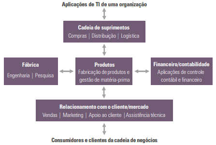

Os sistemas de informação desempenham papel fundamental nas organizações modernas, sendo considerados essenciais para alcançar a excelência operacional, criar novos produtos e serviços, melhorar a qualidade das decisões, estreitar o relacionamento com os clientes e aumentar a competitividade no mercado.
Processos organizacionais são conjuntos de atividades inter-relacionadas com objetivo bem definido. Podem ser realizados por pessoas ou por sistemas computacionais e produzem e consomem informações continuamente. Esses processos são classificados em:
A correta definição e modelagem desses processos é indispensável para a escolha eficiente da infraestrutura de TI e para o desenvolvimento de aplicações que estejam alinhadas às necessidades e metas da organização.
Os sistemas de informação integram pessoas, dispositivos, software, redes e bancos de dados. Juntos, esses elementos sustentam as operações do negócio, fornecendo suporte às decisões e à formulação de estratégias. Nesse contexto, a estratégia corporativa da organização define a arquitetura de TI, que por sua vez estabelece quais tecnologias de TI serão utilizadas.
Estratégia Corporativa → Arquitetura de TI → Infraestrutura → Processos de Negócios
A arquitetura de TI é o conjunto de diretrizes, padrões, plataformas e processos tecnológicos que dão suporte ao negócio. Ela inclui a infraestrutura física (servidores, cabos, dispositivos), plataformas de software e práticas de segurança. Seu propósito é garantir que a TI ofereça desempenho, confiabilidade, escalabilidade e sustentabilidade.
Os sistemas de informação assumem três papéis principais nas organizações:
As aplicações de TI são desenvolvidas para atender a processos específicos da organização e operam em diferentes níveis. No ambiente industrial, por exemplo, sistemas automatizados com sensores controlam o acionamento de máquinas. Já em áreas administrativas, aplicações cuidam do controle de estoque, da fabricação de produtos e da integração entre departamentos e parceiros externos.
No Quadro 1 abaixo, observa-se como diferentes departamentos utilizam sistemas de informação em seus processos:
| Departamento | Processos Funcionais |
|---|---|
| Produtos (produção/manufatura) | Montagem, gestão da qualidade, lista de materiais |
| Vendas e marketing | Prospecção de clientes, cadastro, precificação e vendas |
| Finanças e contabilidade | Contas a pagar/receber, relatórios financeiros, impostos |
| Gestão de pessoas | Recrutamento, avaliação de desempenho, desligamentos |
| Compras e logística | Aquisição de insumos, recebimento e distribuição |
Além dos sistemas funcionais, existem soluções integradas como:
A infraestrutura de TI é a base tecnológica que sustenta as aplicações e os sistemas de informação. Ela é composta por equipamentos físicos, redes, software de base e serviços que viabilizam o funcionamento contínuo e seguro das operações de negócio.
Componentes da infraestrutura:
Um exemplo prático: sensores instalados em um avião monitoram diversos parâmetros como combustível, temperatura e velocidade. Esses dados são processados em tempo real por sistemas embarcados, que interpretam as informações e as apresentam ao piloto de maneira acessível e útil para a tomada de decisão.
O conceito de "entregáveis" da TI refere-se à sua capacidade de entregar valor real ao negócio por meio de soluções inovadoras, com agilidade, segurança, desempenho e escalabilidade.
Veja o seguinte vídeo para melhor entendimento: link
O avanço da informática e a popularização dos computadores pessoais transformaram a forma como as organizações operam. A tecnologia da informação deixou de ser um suporte operacional para se tornar uma ferramenta estratégica e indispensável no ambiente corporativo.
É fundamental que a arquitetura de TI esteja alinhada aos objetivos do negócio, sendo capaz de sustentar seu crescimento com flexibilidade, segurança e eficiência. Com uma infraestrutura sólida e bem gerida, a organização ganha agilidade, competitividade e capacidade de adaptação em um cenário cada vez mais digital.
{% include nav-aula.html materia="infraestruturadeti" aula="2" %} {% include footer.html %}